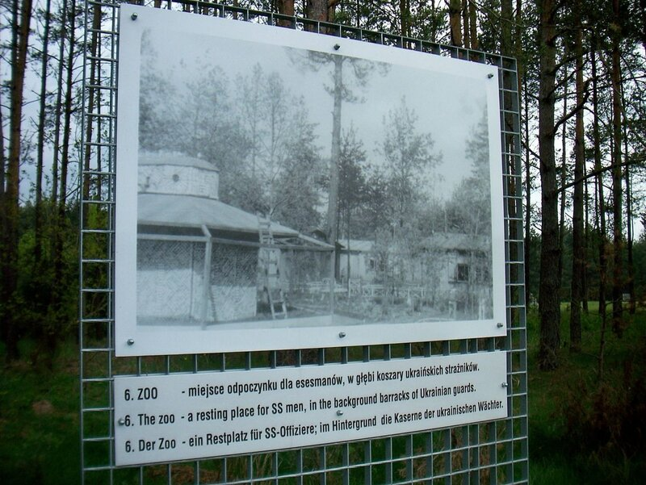
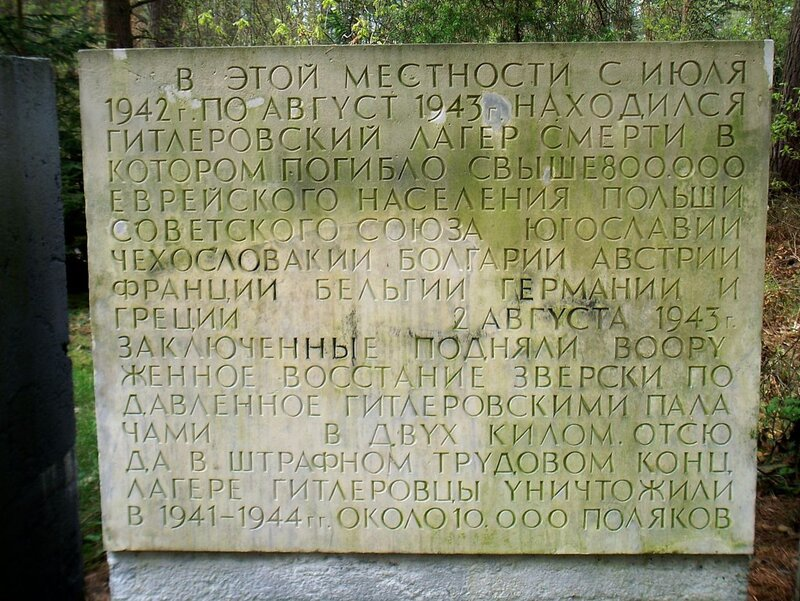

Концентрационный лагерь "Треблинка"
Содержит в себе два концентрационных лагерях: треблинка 1 - так называемый трудовой лагерь и треблинка 2 - лагерь смерти, который расположен в 80 км к северо-востоку от Варшавы.
Лагерь смерти треблинка 2 существовал с 22 июля 1942 по Октябрь 43. Всего в лагере была убито от 750 до 810,000 человек подавляющее большинство жертв 99.5% евреи около 2,000, цыгане.После наполнения людьми, в камеры, замаскированные под душевые, подавали выхлопные газы от двигателя тяжёлого танка (другим способом было выкачивание воздуха из камер). Смерть наступала от удушья в течение получаса.
2 августа 1943 года в Треблинке-2 теми узниками, жизнь которых временно сохранялась для обеспечения функционирования лагеря, было поднято тщательно спланированное восстание, в результате которого часть из них сумела бежать, а 54 смогли дать свидетельские показания после перехода территории. Но многие узники были пойманы и убиты.
Треблинка создавалась, как концентрационный лагерь для местных политических заключённых. Он был сравнительно небольшим. В этом не было никакой необходимости – по соседству находились и другие лагеря, например, Собибор и Бельжец. Так как узники Треблинки, названной так по имени близлежащей польской деревушки, не должны были обслуживать никакие промышленные объекты, территорию для постройки лагеря выбрали очень уединённую. Лагерь располагался в лесу и был предусмотрительно обнесён высокой трёхметровой оградой.
Построили его весной 1941 года. Но уже в мае 1942 комендант лагеря Франц Штагель получил секретный приказ построить второе отделение лагеря, которое впоследствии получило название Треблинка-2. И нацисты в глубокой тайне приступили к его возведению. Этот объект был строго засекречен. К глухой ограде добавился патруль, выставленный в лесу по периметру в одном километре от лагеря. Дозорным было приказано стрелять без предупреждения в любого, кто покажется в запрещённой зоне. Даже немецким самолётам запрещалось нарушать воздушную границу лагеря. Прибывающие железнодорожные составы останавливались перед воротами. Никто из машинистов или кочегаров не имел никакой возможности увидеть, что происходит внутри.
